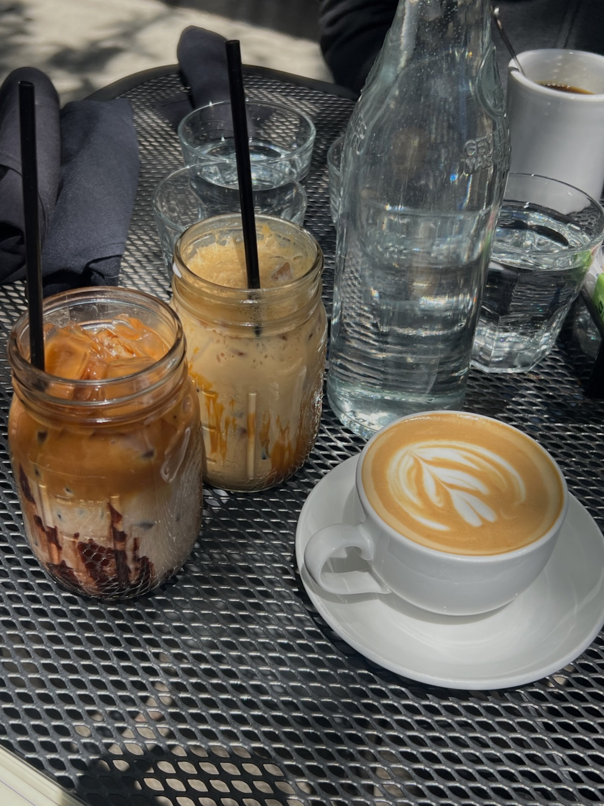

Oat milk, low light, and the best table by the window
This is placeholder writing — replace it with your real visit. Talk about how you found the place, what the room felt like walking in, and what made you want to write it down at all.
Get specific: the sound of the espresso machine, what was playing, whether it was crowded, who you were with (or that you were happily alone). This is a blog, not a review site — the details that would mean nothing to a stranger are exactly the ones worth keeping.
what i got: iced brown sugar oat latte — would order again
Close with whatever's true: would you go back, is there a better time of day to go, did you find your new regular spot. That's the whole point of keeping this.
see this spot on the map →